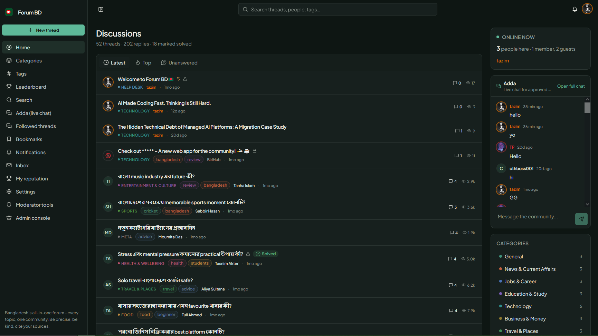
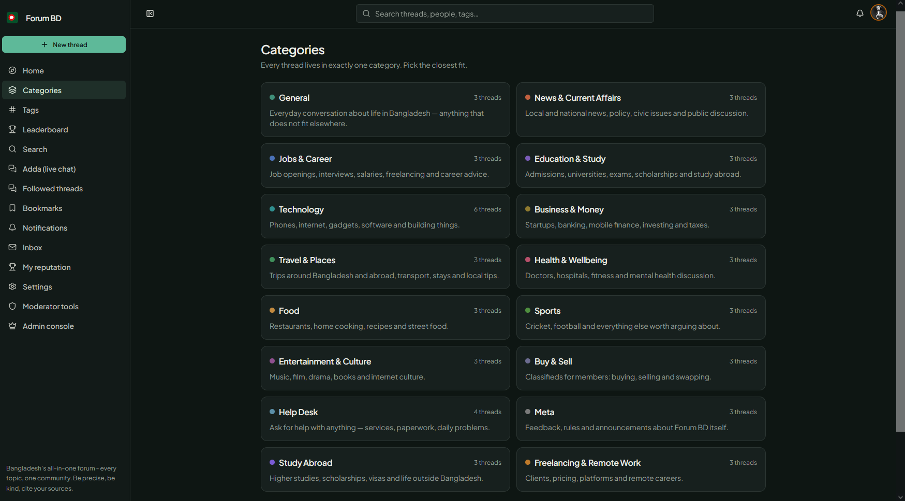
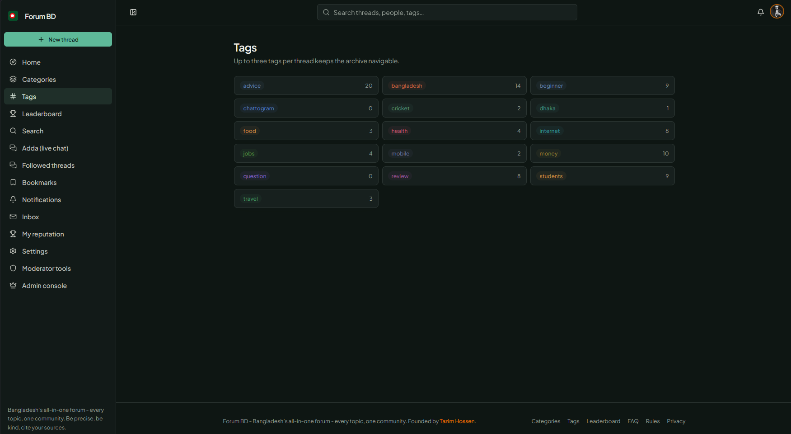
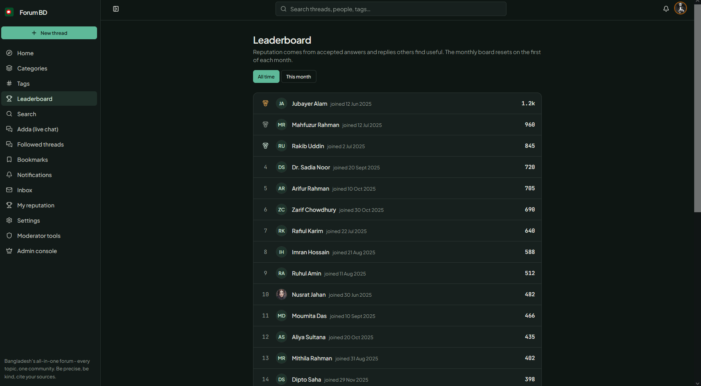
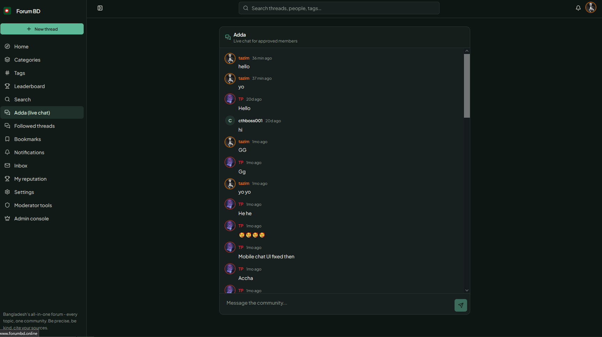
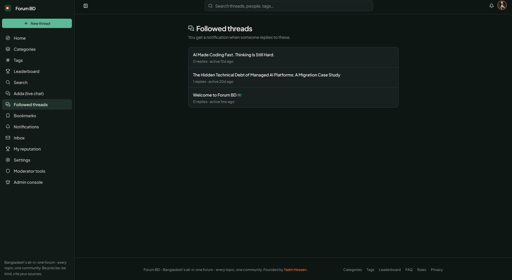
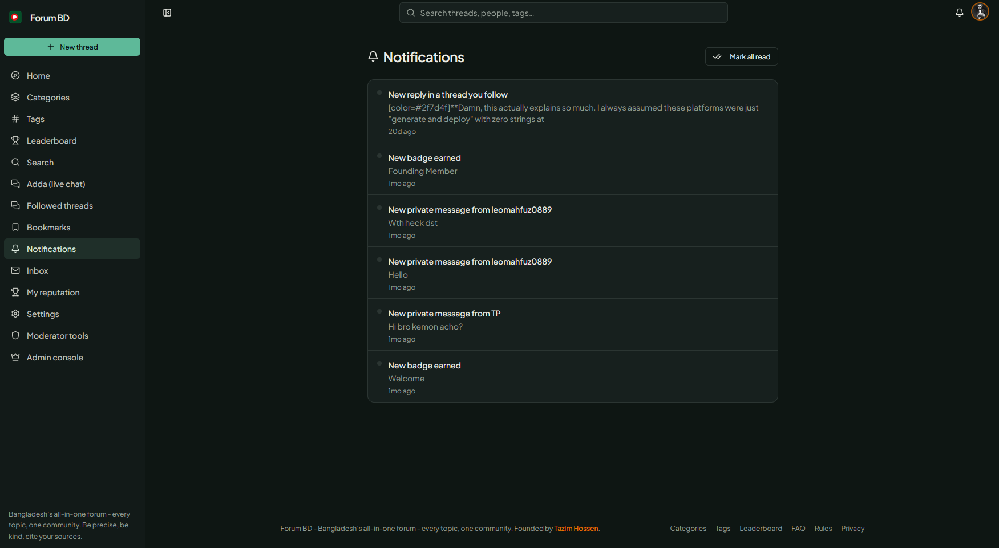
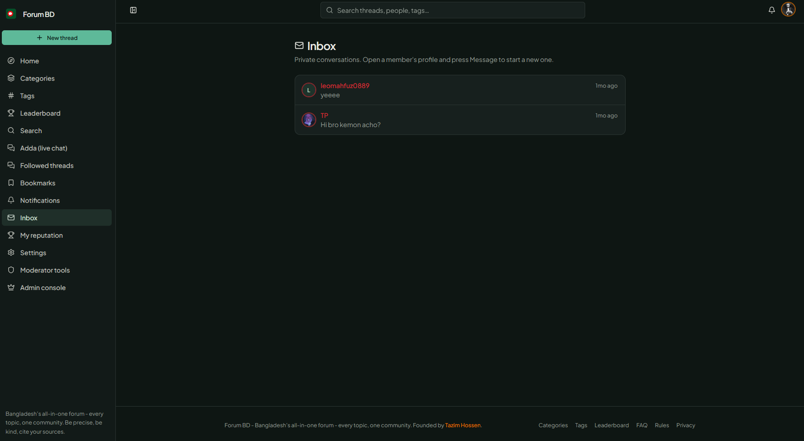
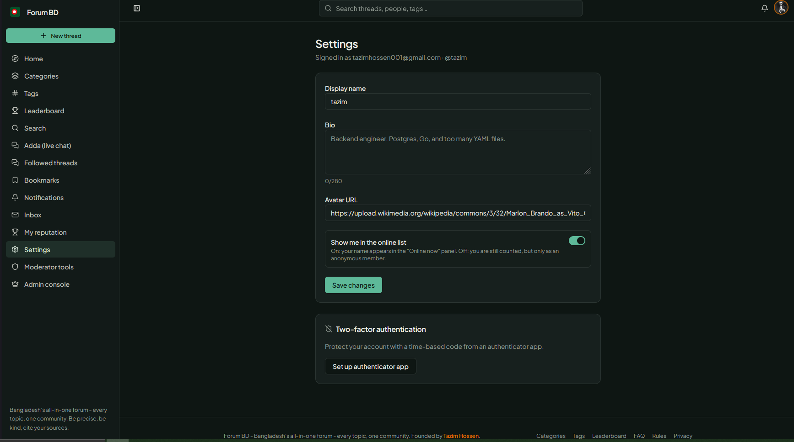

Forum BD
A general-purpose community forum where people in Bangladesh can discuss work, study, current affairs, technology, business, travel and everyday life. The interface is in English, and members write in both English and Bangla.
Overview
I build and run Forum BD. It began from a codebase generated with Lovable. I later detached it from that host and rebuilt it on infrastructure I control. The current app has about 16,000 lines of TypeScript across 128 files, with 27 routes and 54 unit tests.
As of September 2026, the community has 50+ threads and 39 member profiles. Members can post threads and replies, browse categories and tags, vote, earn reputation and badges, mark answers as accepted, follow discussions, use private one-to-one conversations and join the live chat room. New accounts need admin approval before they can post.
The database schema is 4,357 lines. Its 26 tables are protected by row-level security policies.
Technology Stack
Application
- React 19
- TanStack Start v1 with SSR
- TanStack Router
- TypeScript
UI and build
- Vite 8
- Tailwind CSS 4
- shadcn/ui primitives
Data and identity
- Supabase
- Postgres 17
- Supabase Auth and Storage
Deploy
- Vercel
- Docker image built in CI on every push
Engineering Decisions
Authorization is enforced by Postgres
Row-level security is enabled on every public table. Roles live in a separate user_roles table and are checked through a SECURITY DEFINER function. A profile row therefore cannot grant itself administrator access. The service-role key is not imported at module scope in browser-shipped code.
Sign-in abuse controls without storing raw IPs
Sign-in attempts are keyed by a server-side hash combining the request IP and a device fingerprint. Raw IP addresses are not sent to the database. Failed attempts trigger a cooldown, and new members have tighter daily post and link limits during their first week.
Rendering untrusted post text
The custom Markdown and BBCode renderer escapes every input character first, then converts a fixed allow-list of tags. This avoids shipping a DOM-based sanitizer into the edge runtime.
Moving the live product and checking its policies
I moved the product from its no-code host to a Supabase project I own in a day. I used pg_dump and restore for 39 profiles, 52 threads, 203 posts, 11 auth users and 13 identities. Afterward, I queried the public REST API as the anonymous role to verify that the restored row-level security policies still applied.
Approval as the posting gate
I removed a 24-hour wait that kept newly approved members from posting. Approval is now the gate, and approving a member sends a transactional welcome email through Resend from a server function.
Community Features
Categories cover General, News & Current Affairs, Jobs & Career, Education & Study, Technology, Business & Money, Travel & Places, Health & Wellbeing, Sports and Food.
Screenshots
A look at the public community experience. Select an image to view it at full size.








